Scanner in sleep mode
Status
- Scanner asleep -
Latest data dump:
00007d70 0c 1d 4d e9 f6 94 5c 28 21 54 21 46 4e c0 e9 e0
00007d80 ef 10 50 53 23 d5 d8 b6 92 bd 75 bb 22 0a 60 53
00007d90 bb 42 35 d4 65 3e c1 52 9f 23 26 ee 61 31 01 12
00007df0 6c 00 b4 85 0c dc a5 59 80 ef 8c 08 3a 26 e4 51
00007e00 55 41 52 19 25 52 39 93 55 23 90 c9 9d 25 48 39
00007e10 28 91 d3 38 f1 08 64 ce 02 51 03 64 60 10 da 00
00007e20 39 86 34 c3 7c bc 23 c2 8f 78 b4 f9 66 ae 7a cb
00007e30 ff 00 49 cd 77 6e e9 da 99 d9 76 80 64 29 b9 93
00007e40 39 7d ec b9 0b 81 7a ae d5 53 19 45 5b 4b 63 48
00007e50 54 15 7d 67 55 c9 b9 54 cc e1 21 60 d8 b7 7c e9
Selected Mode: ASDB-B
Scanner scanning..
refresh 0%
Scanning finished.
Scanning Quality: 144
Immersion: 23%
Overall: BE.q
- Scanner asleep -
Latest data dump:
00007d70 0c 1d 4d e9 f6 94 5c 28 21 54 21 46 4e c0 e9 e0
00007d80 ef 10 50 53 23 d5 d8 b6 92 bd 75 bb 22 0a 60 53
00007d90 bb 42 35 d4 65 3e c1 52 9f 23 26 ee 61 31 01 12
00007df0 6c 00 b4 85 0c dc a5 59 80 ef 8c 08 3a 26 e4 51
00007e00 55 41 52 19 25 52 39 93 55 23 90 c9 9d 25 48 39
00007e10 28 91 d3 38 f1 08 64 ce 02 51 03 64 60 10 da 00
00007e20 39 86 34 c3 7c bc 23 c2 8f 78 b4 f9 66 ae 7a cb
00007e30 ff 00 49 cd 77 6e e9 da 99 d9 76 80 64 29 b9 93
00007e40 39 7d ec b9 0b 81 7a ae d5 53 19 45 5b 4b 63 48
00007e50 54 15 7d 67 55 c9 b9 54 cc e1 21 60 d8 b7 7c e9
Selected Mode: ASDB-B
Scanner scanning..
refresh 0%
Scanning finished.
Scanning Quality: 144
Immersion: 23%
Overall: BE.q
Yoshida, Carmen
UID: CA63BF/T-1S Score: 24
Fingerprint acquired on REX F48B7B471442
Gupta, Omar
UID: DEBD3D/T-5R Score: 86
Fingerprint acquired on REX 4B8079B6E35F
Li, Arjun
UID: C9E911/T-9R Score: 18
Fingerprint acquired on REX 3FA7A218A407
Dubois, Ming
UID: 1A578E/T-7R Score: 56
Fingerprint acquired on REX CD6013295BFE
Hansen, Fiona
UID: CF1D0B/T-4R Score: 77
Fingerprint acquired on REX B188788F02B5
Johansson, Luca
UID: D8AF6D/T-8S Score: 15
Fingerprint acquired on REX F5F4B3CCF7F0
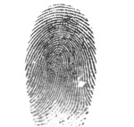
Hansen, Elif
UID: 15F14F/T-1S Score: 71
Fingerprint acquired on REX 791F220EC043
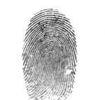
Dubois, Arjun
UID: B25343/T-4S Score: 35
Fingerprint acquired on REX 02E72C11B0E8
Dubois, Fiona
UID: A49CF4/T-2M Score: 34
Fingerprint acquired on REX F7F48AAD8485
Costa, Minh
UID: 45F417/T-3M Score: 28
Fingerprint acquired on REX C2E4DEE688BB
García, Haruto
UID: AD3D49/T-7R Score: 81
Fingerprint acquired on REX 7F40313E4CFA
Murphy, Luca
UID: E16975/T-6M Score: 25
Fingerprint acquired on REX F42E1D52EC1C
Santos, Min-jun
UID: 2F772A/T-8S Score: 81
Fingerprint acquired on REX F379684547EC
Diallo, Omar
UID: EA4C47/T-5R Score: 37
Fingerprint acquired on REX 727F31E2F4F3
Jensen, Olivia
UID: D5314E/T-0M Score: 29
Fingerprint acquired on REX 32AE19BA1EB4
Bernard, Mateus
UID: 5BAD65/T-5M Score: 21
Fingerprint acquired on REX E1E8EAF06A44
Khan, Ricardo
UID: B69122/T-8S Score: 58
Fingerprint acquired on REX 230ADAF7911D
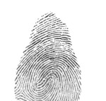
O'Reilly, Luca
UID: 90F50F/T-0R Score: 3
Fingerprint acquired on REX B8ECBBA95BA1
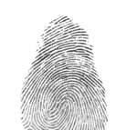
Chen, Marie
UID: 9C9E10/T-9M Score: 62
Fingerprint acquired on REX 0081E25164B0
Wong, Sean
UID: C9BEE3/T-7S Score: 77
Fingerprint acquired on REX 816FB35493CB
Hansen, Felix
UID: 132D90/T-7M Score: 8
Fingerprint acquired on REX D2B7D76604A3
Patel, Luca
UID: ECFC92/T-8R Score: 44
Fingerprint acquired on REX 6724DA30281F
Silva, Alexei
UID: 6C14B3/T-1S Score: 64
Fingerprint acquired on REX 0819788BA747
Bernasconi, Aidan
UID: 5F912B/T-1M Score: 59
Fingerprint acquired on REX 213215427438
Khan, Luca
UID: 2B3666/T-7S Score: 53
Fingerprint acquired on REX 4A996600A447
Zhang, Aïssa
UID: 417E92/T-9M Score: 73
Fingerprint acquired on REX F87CC81F836D
O'Reilly, Carmen
UID: 9DBF84/T-3M Score: 19
Fingerprint acquired on REX 0388CF0287E9
Wong, Ivan
UID: 68FEB2/T-0S Score: 84
Fingerprint acquired on REX 3E752FEE4419
Wang, Angela
UID: 1FD303/T-0S Score: 79
Fingerprint acquired on REX 948B9752A0D1
Hernandez, Tadeusz
UID: 6AF7A0/T-8M Score: 67
Fingerprint acquired on REX A8865BAAA2D8
Dubois, Ming
UID: 280AD0/T-1R Score: 19
Fingerprint acquired on REX A096B0D44D6E
López, Rhys
UID: 411D04/T-7R Score: 55
Fingerprint acquired on REX EC5DEDCE92E0
Diallo, Olivia
UID: 0202DE/T-0R Score: 7
Fingerprint acquired on REX 2599EA1FFB0F
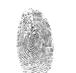
Ahmed, Haruto
UID: 985848/T-6R Score: 11
Fingerprint acquired on REX 7E6A17E23578
O'Reilly, Mohamed
UID: 618CF4/T-5S Score: 3
Fingerprint acquired on REX 0E56A1E42E97
Rossi, Noah
UID: F35139/T-8R Score: 32
Fingerprint acquired on REX E5B4B23AC22C
Costa, Omar
UID: C7B6B8/T-7R Score: 15
Fingerprint acquired on REX B1B533B3D475
Russo, Luca
UID: 741213/T-0R Score: 88
Fingerprint acquired on REX 48F4C59D959A
Russo, Hassan
UID: A1CA55/T-1S Score: 23
Fingerprint acquired on REX 9EF3D19E18E5
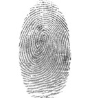
Costa, Carlos
UID: AA17E1/T-5M Score: 3
Fingerprint acquired on REX A8FECAB19CB4
Dupont, Hassan
UID: 62FD08/T-1M Score: 3
Fingerprint acquired on REX FB9A03257C71
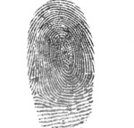
Meier, Ming
UID: 614A78/T-6S Score: 50
Fingerprint acquired on REX 270A335363FE
Suzuki, Isabella
UID: 420D23/T-4M Score: 51
Fingerprint acquired on REX 9F764EC0FC43
Costa, Ananya
UID: FEA969/T-0M Score: 57
Fingerprint acquired on REX 18604882EBDC
Ahmed, Tadeusz
UID: C92742/T-3S Score: 13
Fingerprint acquired on REX 26CD427B6CE3
Peterson, Wei
UID: 13E9F4/T-2S Score: 10
Fingerprint acquired on REX 0AD7C6CB7766
Müller, Emily
UID: 48BBB8/T-6S Score: 52
Fingerprint acquired on REX E074475F9AF6
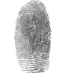
Jensen, Sakura
UID: 4FCA32/T-6M Score: 9
Fingerprint acquired on REX 078256CD0FC1
Nguyen, Alexei
UID: 509FA8/T-2M Score: 77
Fingerprint acquired on REX D7C2671ABECA
Kovács, Carmen
UID: 0CD386/T-8S Score: 43
Fingerprint acquired on REX B2722783B25C
Hernandez, Tadeusz
UID: 3A009C/T-6M Score: 21
Fingerprint acquired on REX ED78C027BFA5
Patel, Tadeusz
UID: 7E8D51/T-9M Score: 17
Fingerprint acquired on REX C8C9E543C4A5
Li, Tadeusz
UID: 94045D/T-1M Score: 83
Fingerprint acquired on REX 0D4A056124E2
Abdi, Luca
UID: 0D8A08/T-1M Score: 77
Fingerprint acquired on REX 0A070F77C1D8
Yilmaz, Isabella
UID: 12A00C/T-6R Score: 3
Fingerprint acquired on REX C7349727B625
Meier, Alejandro
UID: A5C942/T-9M Score: 33
Fingerprint acquired on REX 9AAF93F58ABE
Gupta, Marie
UID: 6CEAA2/T-9M Score: 32
Fingerprint acquired on REX 636594A50DFA
Bernard, Sami
UID: 9B3326/T-5S Score: 31
Fingerprint acquired on REX 211B0776CE5D
Schmidt, Yuto
UID: 334109/T-5R Score: 70
Fingerprint acquired on REX 6F9ADCB8DD64
Murphy, Olivia
UID: B8589D/T-5S Score: 64
Fingerprint acquired on REX 6661E0A20251
Abdi, Alexei
UID: D0AC7B/T-8R Score: 41
Fingerprint acquired on REX 94880BA7B861
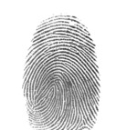
Ivanov, Márk
UID: C76079/T-4R Score: 11
Fingerprint acquired on REX 83CE5CADD51A
Nguyen, Giulia
UID: F878FB/T-1S Score: 13
Fingerprint acquired on REX 34260B306BEB
Dubois, Min-jun
UID: BA5194/T-5S Score: 74
Fingerprint acquired on REX 31179E3C570C
Bernard, Jose
UID: 9301B0/T-9M Score: 83
Fingerprint acquired on REX FF7C7B4FC7B3
Müller, Sofía
UID: 710F44/T-0S Score: 59
Fingerprint acquired on REX B534438A5636
Costa, Hassan
UID: 9FA5B2/T-3S Score: 14
Fingerprint acquired on REX DF23F1F70B09
Müller, Yuto
UID: C77D92/T-3R Score: 21
Fingerprint acquired on REX 2D6C6FDA3E16
Diallo, Sofía
UID: C0A3DB/T-4R Score: 68
Fingerprint acquired on REX 1F9E31674C7D
Levi, Elif
UID: 1DC38D/T-4R Score: 15
Fingerprint acquired on REX 3E56F09DBAC9
Alonso, Aidan
UID: 028D22/T-1M Score: 58
Fingerprint acquired on REX 73C01D12CBA5
Bayani, Joyce
UID: A5C942/T-9M Score: 172
Fingerprint acquired on REX 093D215A45EE
Silveira, Erik
UID: 85C30C/T-9M Score: 75
Fingerprint acquired on REX 985FC87E97C7
Rossi, Tadeusz
UID: E5AEF2/T-5M Score: 76
Fingerprint acquired on REX C87BF3E5081F
Abdi, Li
UID: E3B4B5/T-8R Score: 77
Fingerprint acquired on REX B8CF833B7F14
Jensen, Olivia
UID: 9426A8/T-3R Score: 33
Fingerprint acquired on REX A3CD092E682E
Diallo, Arjun
UID: 42FD7F/T-5R Score: 54
Fingerprint acquired on REX 8DB194278832
Zhang, Mateus
UID: D0B81D/T-9M Score: 71
Fingerprint acquired on REX CC85902A8FBD
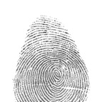
Khan, Olivia
UID: 431836/T-6S Score: 44
Fingerprint acquired on REX 8C3FB01E1162
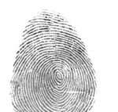
Nguyen, Jasmine
UID: 7A9635/T-2R Score: 23
Fingerprint acquired on REX B4339A33AF74
Smith, Isabella
UID: B9174B/T-4M Score: 33
Fingerprint acquired on REX 0472A96B6319
Johnson, Mateus
UID: 0F67D0/T-7M Score: 25
Fingerprint acquired on REX FFA046757673
Kovács, Olivia
UID: 2C2291/T-4M Score: 31
Fingerprint acquired on REX 50334E8C1FF3
Jensen, Angela
UID: EEAB2F/T-7S Score: 35
Fingerprint acquired on REX 01CB9831864D
Johansson, Haruto
UID: F1AF2B/T-8S Score: 24
Fingerprint acquired on REX FE31EAFFAFBE
Petrov, Fiona
UID: 91966E/T-7M Score: 2
Fingerprint acquired on REX 33CA4CE62A1E
Dupont, Ella
UID: C049CA/T-6S Score: 67
Fingerprint acquired on REX E4AEBF09A510
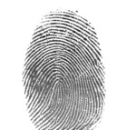
Chen, Sofía
UID: 362BCA/T-9R Score: 29
Fingerprint acquired on REX EB4B38B98C06
Kumar, Marie
UID: 04A6C9/T-8M Score: 14
Fingerprint acquired on REX 925555DFC386
Kumar, Claire
UID: 7B9DF7/T-4R Score: 21
Fingerprint acquired on REX C58CB1A580D3
Patel, Yuto
UID: B48399/T-0S Score: 52
Fingerprint acquired on REX F9E003814E72
Khan, Ricardo
UID: C3F3C6/T-0M Score: 86
Fingerprint acquired on REX 302F5EFF3FB8
Wang, Emily
UID: 5E3636/T-1M Score: 55
Fingerprint acquired on REX 7F8B6407E585
Kim, Julia
UID: 667174/T-6M Score: 17
Fingerprint acquired on REX B7D353FE4A62
Davies, Astrid
UID: 00D0EA/T-4M Score: 16
Fingerprint acquired on REX CD549A48593E
Ozdemir, Zara
UID: 4E7D28/T-0M Score: 37
Fingerprint acquired on REX 8F993019A796
Kazinsky, Julia
UID: 94CA08/T-1S Score: 54
Fingerprint acquired on REX 2E79BF004BE9
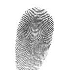
Murphy, Giulia
UID: 8BBFD9/T-4R Score: 65
Fingerprint acquired on REX B3C4F7088FD8
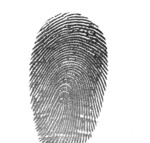
Suzuki, Minh
UID: FB0568/T-2M Score: 43
Fingerprint acquired on REX 5C6AF780E688
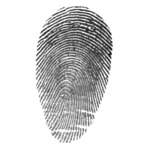
Peterson, Mohamed
UID: 22F2A6/T-9M Score: 70
Fingerprint acquired on REX C98DCACC3B1E

Yilmaz, Aidan
UID: 97CB48/T-8M Score: 47
Fingerprint acquired on REX 093D215A45EE